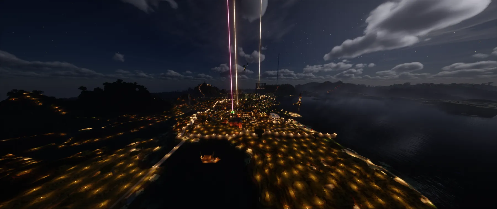
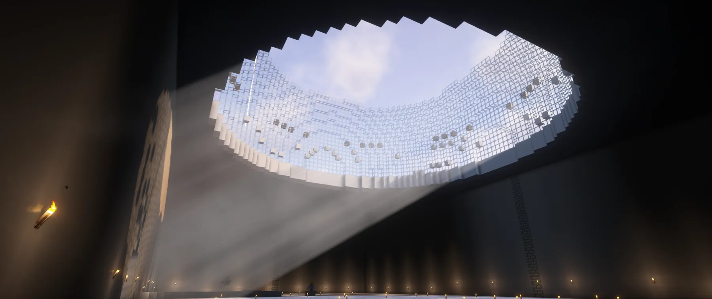
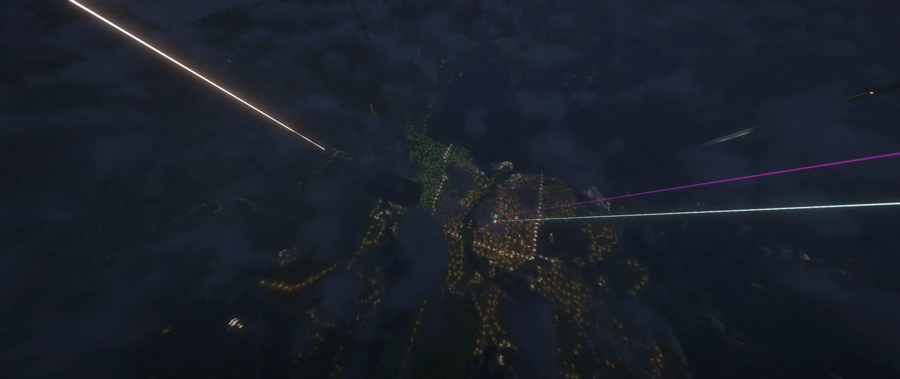
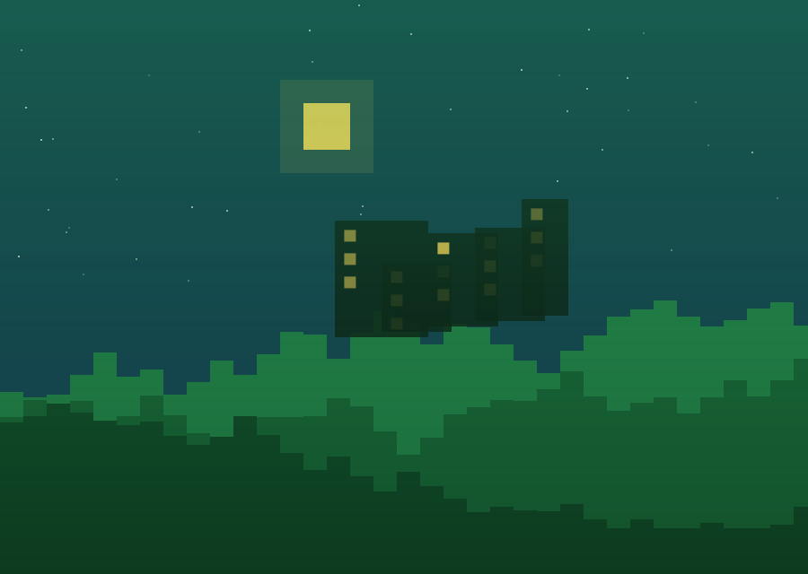
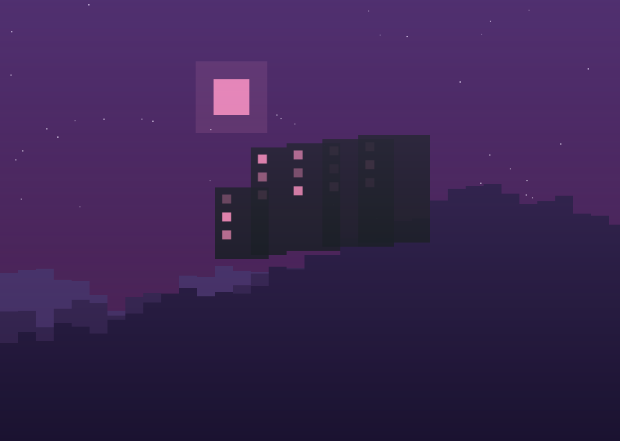
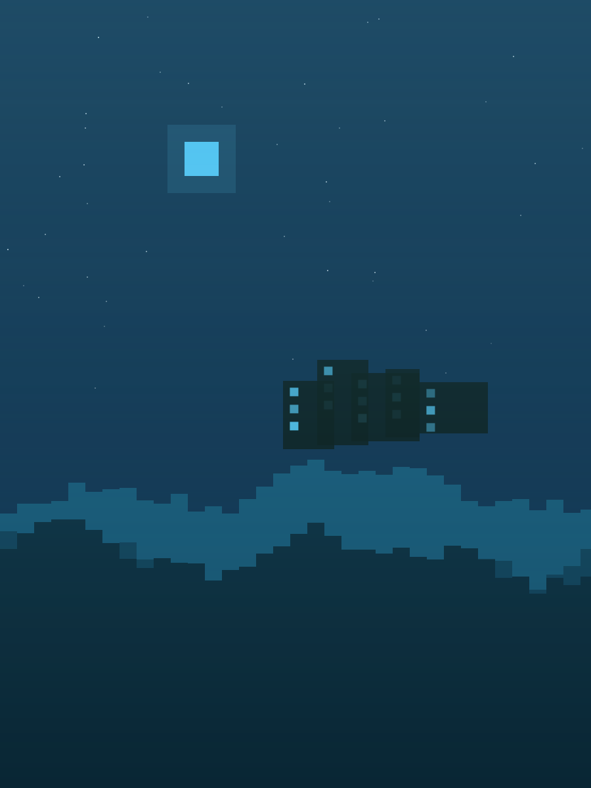
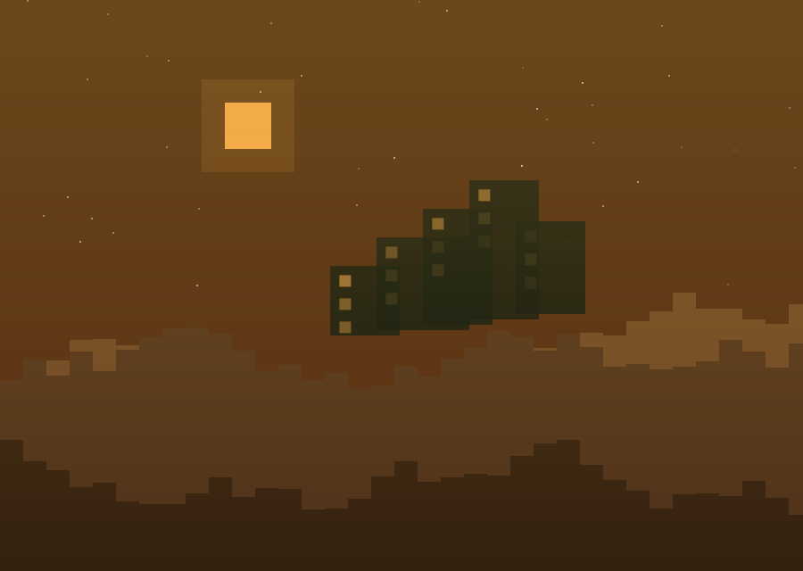
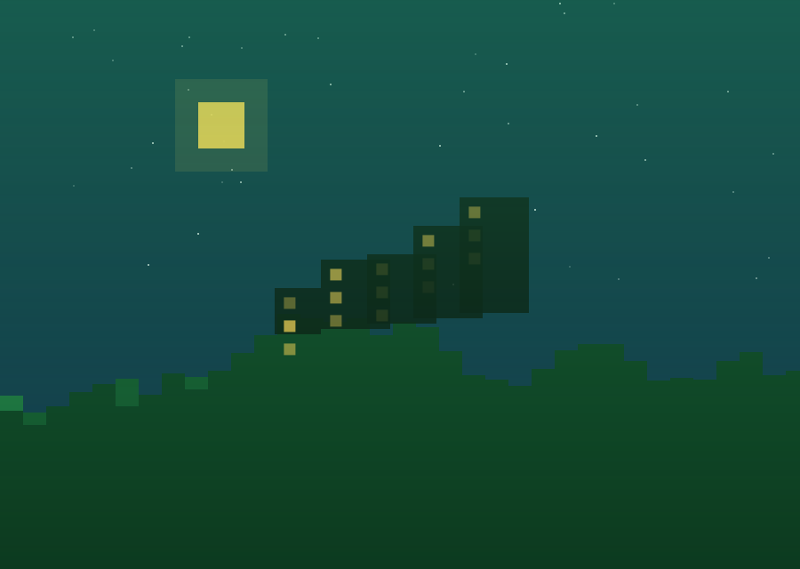

Kuvat
Galleria
Buildeja, maisemia ja serverin hetkiä. Klikkaa kuvaa suurentaaksesi.








Yhteisö
Lisää oma kuva galleriaan
Sama pelinimi ja salasana kuin kartan merkeissä. Kuva muutetaan automaattisesti pieneksi WebP-tiedostoksi (~100 kt) selaimessasi ennen lähetystä — alkuperäistä ei tallenneta. Yksi pelaaja voi lisätä enintään 50 kuvaa, koko galleria enintään 200.
Sivuston omat kuvat yllä: pudota tiedostot kansioon
assets/img/ ja lisää
uusi <figure> ensimmäiseen galleriaan koodissa. Alempi galleria on
kaikkien kaverien yhdessä täyttämä ja tallentuu Supabaseen.